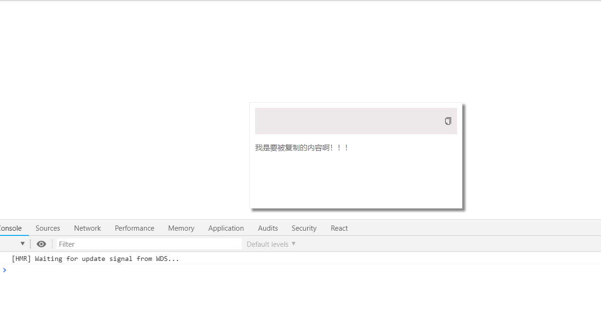
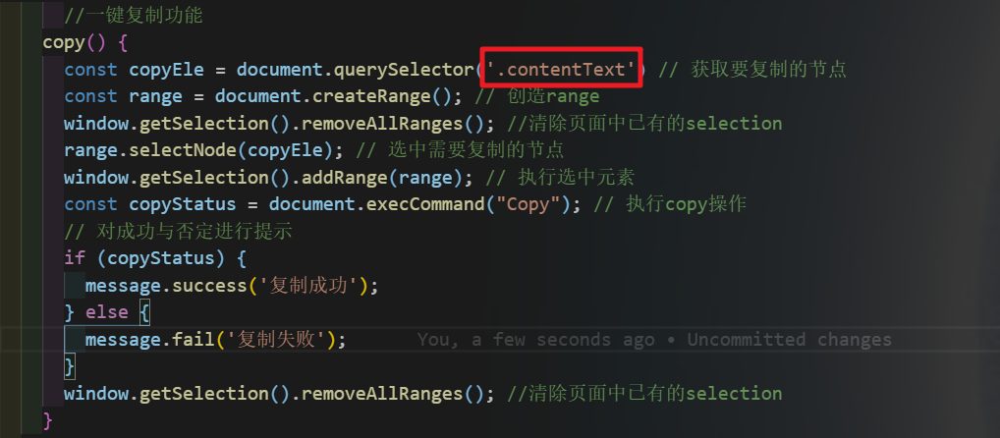

如题，我们怎么在React或者其他的框架中实现一键复制呢，实际上实现一键复制的代码与框架无关，因为他是用的是原生的API，下面我们用React来实现一下
效果：

核心代码：
直接将红框处改为需要复制的元素类名。(获取元素时注意一下我用的是querySelector)
将该事件绑定到元素上，即可。完整代码在最下方

完整代码：
注意：Icon和message均是来自于antd组件库，如若没装antd，改成别的元素即可
import React from 'react';
import './App.css';
import {Icon, message} from 'antd';
class App extends React.Component{
//一键复制功能
copy() {
const copyEle = document.querySelector('.contentText') // 获取要复制的节点
const range = document.createRange(); // 创造range
window.getSelection().removeAllRanges(); //清除页面中已有的selection
range.selectNode(copyEle); // 选中需要复制的节点
window.getSelection().addRange(range); // 执行选中元素
const copyStatus = document.execCommand("Copy"); // 执行copy操作
// 对成功与否定进行提示
if (copyStatus) {
message.success('复制成功');
} else {
message.fail('复制失败');
}
window.getSelection().removeAllRanges(); //清除页面中已有的selection
}
render() {
return (
<div className="App">
<div className="content">
<p className="contentTitle">
<Icon
type="copy"
onClick={this.copy}/>
</p>
<p className="contentText">
我是要被复制的内容啊！！！
</p>
</div>
</div>
);
}
}
export default App;
原理：
我们来看一下具体的步骤：（具体API使用可以查阅MDN）
1. document.querySelector('.contentText') 获取需要复制的节点
2. document.createRange(); 创造一个区域
3. window.getSelection().removeAllRanges(); 将所有选区都清除(即被按住鼠标划中选择的部分)
4. range.selectNode(copyEle)； 选中区域要包含的对象
5. document.execCommand("Copy"); execCommand方法允许运行命令来操纵可编辑内容区域的元素。
6.判断成功与否
7.window.getSelection().removeAllRanges(); 将所有选区都清除(即被按住鼠标划中选择的部分)
通过以上的步骤，一键复制就做好啦！！